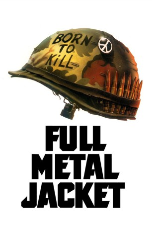

#1158 Full Metal Jacket
Auszeichnungen: für 1 Oscars nominiert
 
 IMDB-Wertung: 8.3 / 10
IMDB-Wertung: 8.3 / 10  IMDB-TOP-Platzierung: 97
IMDB-TOP-Platzierung: 97  Metascore: 76
Metascore: 76 
South Carolina 1967. Im Camp von Parrish Island werden Joker und seine Kameraden auf traditionell brutale Art zu Marines gedrillt. Der Ausbilder bezahlt seine Profiarbeit mit dem Leben: Leonard, sein Lieblingsopfer, erschiesst den Schinder, bevor er sich selbst tötet. - An der Dschungelfront in Vietnam, nach der Tet-Offensive, geraten Joker - der inzwischen als Journalist Heldenberichte für die Soldatenzeitung "Stars & Stripes" schreibt - und seine Kameraden in den Hinterhalt eines Heckenschützen. Die scheinbar einfache Wiedereroberung Hues gerät zum verlustreichen Desaster. Der Scharfschütze, ein Vietcong-Mädchen, wird von den Soldaten getötet. Und der Wahnsinn geht weiter...
Jahr: 1987
Dauer: 116 Minuten
FSK: 16
Land: England Studio: Warner Bros.Tonspuren:
Untertitel:
Auflösung: 1080p (1920x1080) Größe: 9216 MB
Genre: Drama, Krieg
Regisseur:  Stanley Kubrick
Stanley Kubrick
Drehbuch: Stanley Kubrick, Michael Herr, Gustav Hasford, Gustav Hasford
Soundtrack: Vivian Kubrick
Darsteller:
 Matthew Modine als Pvt. J.T. 'Joker' Davis
Matthew Modine als Pvt. J.T. 'Joker' Davis Adam Baldwin als Animal Mother
Adam Baldwin als Animal Mother Vincent D'Onofrio als Pvt. Leonard 'Gomer Pyle' Lawrence
Vincent D'Onofrio als Pvt. Leonard 'Gomer Pyle' Lawrence R. Lee Ermey als Gny. Sgt. Hartman
R. Lee Ermey als Gny. Sgt. Hartman Dorian Harewood als Eightball
Dorian Harewood als Eightball Kevyn Major Howard als Rafterman
Kevyn Major Howard als Rafterman Arliss Howard als Pvt. Cowboy
Arliss Howard als Pvt. Cowboy Ed O'Ross als Lt. Touchdown
Ed O'Ross als Lt. Touchdown John Terry als Lt. Lockhart
John Terry als Lt. Lockhart Kirk Taylor als Payback
Kirk Taylor als Payback- Sal Lopez als T.H.E. Rock
- Gary Landon Mills als Donlon
- Peter Edmund als Pvt. 'Snowball' Brown
- Marcus D'Amico als Hand Job
- Philip Bailey als Parris Island Recruit and Vietnam Platoon
- Tony Howard als Parris Island Recruit and Vietnam Platoon
- Stanley Kubrick als Murphy , uncredited
- David Palffy als Mass Grave Soldier , uncredited
- John Ward als TV Camera Operator , uncredited
 Kieron Jecchinis als Crazy Earl
Kieron Jecchinis als Crazy Earl- Tim Colceri als Doorgunner
- Jon Stafford als Doc Jay
 Bruce Boa als Poge Colonel
Bruce Boa als Poge Colonel- Ian Tyler als Lt. Cleves
- Papillon Soo als Da Nang Hooker
- Ngoc Le als VC Sniper
- Leanne Hong als Motorbike Hooker
- Tan Hung Francione als ARVN Pimp
- Costas Dino Chimona als Chili
- Gil Kopel als Stork
- Keith Hodiak als Daddy D.A.
- Peter Merrill als TV Journalist
- Herbert Norville als Daytona Dave
- Nguyen Hue Phong als Camera Thief
- Duc Hu Ta als Dead N.V.A.
- Martin Adams als Parris Island Recruit and Vietnam Platoon
- Kevin Albridge als Parris Island Recruit and Vietnam Platoon
- Del Anderson als Parris Island Recruit and Vietnam Platoon
- Louis Barlotti als Parris Island Recruit and Vietnam Platoon
- John Beddows als Parris Island Recruit and Vietnam Platoon
- Patrick Benn als Parris Island Recruit and Vietnam Platoon
- Steve Boucher als Parris Island Recruit and Vietnam Platoon
- Adrian Bush als Parris Island Recruit and Vietnam Platoon
- Tony Carey als Parris Island Recruit and Vietnam Platoon
- Gary Cheeseman als Parris Island Recruit and Vietnam Platoon
- Wayne Clark als Parris Island Recruit and Vietnam Platoon
- Chris Cornibert als Parris Island Recruit and Vietnam Platoon
- Danny Cornibert als Parris Island Recruit and Vietnam Platoon
- John Curtis als Parris Island Recruit and Vietnam Platoon
- John Davis als Parris Island Recruit and Vietnam Platoon
Datei: X:\1987\Full Metal Jacket (1987, FSK16, 1920x1080).mkv seit 29.05.2015
Festplatte: HD 1987-1991
 Es gibt insgesamt 50 Filme in der Gruppe '1987'
Es gibt insgesamt 50 Filme in der Gruppe '1987'